4 GIS in R
Throughout this section, we will use the following packages:
library(tidyverse)
library(sf)
library(terra)
library(FedData)
library(tidyterra)
library(maps)4.1 Goals and Motivation
Maintaining all analyses within a single software (R) can greatly simplify your research workflow. In this section, we’ll cover the basics of doing GIS in R.
By the end of this lesson, you should be able to:
- Understand the main features and types of vector data.
- Generate point data from a set of latitudes and longitudes, such as from fields sites.
- Read, write, query, and manipulate vector data using the
sfpackage. - Understand the main features of raster data.
- Access, manipulate, and stack raster layers.
- Generate summaries of raster data within vector polygon layers.
4.2 Points, lines, and polygons
These data are a way of representing real-world features on a landscape in a highly simplified way. The simplest of these features is a point, which is a 0-dimensional feature that can be used to represent a specific location on the earth, such as a single tree or an entire city. Linear, 1-dimensional features can be represented with points (or vertices) that are connected by a path to form a line and when many points are connected these form a polyline. Finally, when a polyline’s path returns to its origin to represent an enclosed space, such as a forest, watershed boundary, or lake, this forms a polygon.

We can represent these features in R without actually using GIS packages. In this example, we’ll represent several cities in Oregon with common R data structures that you are probably already familiar with.
id <- c(1:5)
cities <- c('Ashland','Corvallis','Bend','Portland','Newport')
longitude <- c(-122.699, -123.275, -121.313, -122.670, -124.054)
latitude <- c(42.189, 44.57, 44.061, 45.523, 44.652)
population <- c(20062, 50297, 61362, 537557, 9603)
oregon_cities <- data.frame(id, cities, longitude, latitude, population)ggplot(
data = oregon_cities,
aes(x = longitude, y = latitude, size = population, label = cities)
) +
geom_point() +
geom_text(hjust = 1, vjust = 1) +
theme_bw()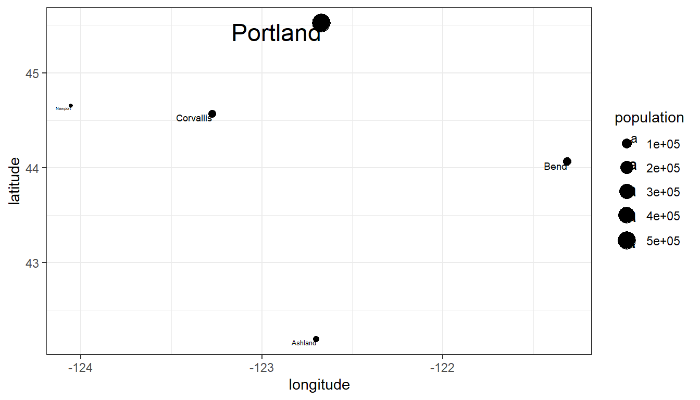
So, is this sufficient for working with spatial data in R and doing spatial analysis? What are we missing?
If you have worked with vector data before, you may know that these data also usually have:
- A coordinate reference system
- A bounding box or extent
- Plot order
- Additional data
In the next section we will introduce the sf package that will allow us to take fuller advantage of spatial features in R.
4.2.1 Exploring the Simple Features (sf) package
The sf package provides simple features access for R. sf fits in within the “tidy” approach to data of Hadley Wickham’s tidyverse and is an ever-expanding package with 113 contributors in GitHub. In short, much of what used to require ArcGIS license can now be done in R with sf:
ls("package:sf")
#> [1] "%>%" "as_Spatial"
#> [3] "dbDataType" "dbWriteTable"
#> [5] "gdal_addo" "gdal_create"
#> [7] "gdal_crs" "gdal_extract"
#> [9] "gdal_inv_geotransform" "gdal_metadata"
#> [11] "gdal_polygonize" "gdal_rasterize"
#> [13] "gdal_read" "gdal_read_mdim"
#> [15] "gdal_subdatasets" "gdal_utils"
#> [17] "gdal_write" "gdal_write_mdim"
#> [19] "get_key_pos" "NA_agr_"
#> [21] "NA_bbox_" "NA_crs_"
#> [23] "NA_m_range_" "NA_z_range_"
#> [25] "plot_sf" "rawToHex"
#> [27] "read_sf" "sf.colors"
#> [29] "sf_add_proj_units" "sf_extSoftVersion"
#> [31] "sf_proj_info" "sf_proj_network"
#> [33] "sf_proj_pipelines" "sf_proj_search_paths"
#> [35] "sf_project" "sf_use_s2"
#> [37] "st_agr" "st_agr<-"
#> [39] "st_area" "st_as_binary"
#> [41] "st_as_grob" "st_as_s2"
#> [43] "st_as_sf" "st_as_sfc"
#> [45] "st_as_text" "st_axis_order"
#> [47] "st_bbox" "st_bind_cols"
#> [49] "st_boundary" "st_break_antimeridian"
#> [51] "st_buffer" "st_can_transform"
#> [53] "st_cast" "st_centroid"
#> [55] "st_collection_extract" "st_combine"
#> [57] "st_concave_hull" "st_contains"
#> [59] "st_contains_properly" "st_convex_hull"
#> [61] "st_coordinates" "st_covered_by"
#> [63] "st_covers" "st_crop"
#> [65] "st_crosses" "st_crs"
#> [67] "st_crs<-" "st_delete"
#> [69] "st_difference" "st_dimension"
#> [71] "st_disjoint" "st_distance"
#> [73] "st_drivers" "st_drop_geometry"
#> [75] "st_equals" "st_equals_exact"
#> [77] "st_filter" "st_geometry"
#> [79] "st_geometry_type" "st_geometry<-"
#> [81] "st_geometrycollection" "st_graticule"
#> [83] "st_inscribed_circle" "st_interpolate_aw"
#> [85] "st_intersection" "st_intersects"
#> [87] "st_is" "st_is_empty"
#> [89] "st_is_longlat" "st_is_simple"
#> [91] "st_is_valid" "st_is_within_distance"
#> [93] "st_jitter" "st_join"
#> [95] "st_layers" "st_length"
#> [97] "st_line_interpolate" "st_line_merge"
#> [99] "st_line_project" "st_line_sample"
#> [101] "st_linestring" "st_m_range"
#> [103] "st_make_grid" "st_make_valid"
#> [105] "st_minimum_rotated_rectangle" "st_multilinestring"
#> [107] "st_multipoint" "st_multipolygon"
#> [109] "st_nearest_feature" "st_nearest_points"
#> [111] "st_node" "st_normalize"
#> [113] "st_overlaps" "st_perimeter"
#> [115] "st_point" "st_point_on_surface"
#> [117] "st_polygon" "st_polygonize"
#> [119] "st_precision" "st_precision<-"
#> [121] "st_read" "st_read_db"
#> [123] "st_relate" "st_reverse"
#> [125] "st_sample" "st_segmentize"
#> [127] "st_set_agr" "st_set_crs"
#> [129] "st_set_geometry" "st_set_precision"
#> [131] "st_sf" "st_sfc"
#> [133] "st_shift_longitude" "st_simplify"
#> [135] "st_snap" "st_sym_difference"
#> [137] "st_touches" "st_transform"
#> [139] "st_triangulate" "st_triangulate_constrained"
#> [141] "st_union" "st_viewport"
#> [143] "st_voronoi" "st_within"
#> [145] "st_wrap_dateline" "st_write"
#> [147] "st_write_db" "st_z_range"
#> [149] "st_zm" "vec_cast.sfc"
#> [151] "vec_ptype2.sfc" "write_sf"Important for us today - the sf package is fast and simple to use. To get a sense of why simple features are simple, let’s make one from our Oregon cities.
In this code we will…
- Convert an existing data frame to a simple feature by:
- Supply the longitude and latitude (x and y).
- Define the (geographic) coordinate reference system (
crs).
print(oregon_cities)
#> id cities longitude latitude population
#> 1 1 Ashland -122.699 42.189 20062
#> 2 2 Corvallis -123.275 44.570 50297
#> 3 3 Bend -121.313 44.061 61362
#> 4 4 Portland -122.670 45.523 537557
#> 5 5 Newport -124.054 44.652 9603
oregon_cities <- oregon_cities %>%
st_as_sf(coords = c('longitude', 'latitude'), crs = 4269)
print(oregon_cities)
#> Simple feature collection with 5 features and 3 fields
#> Geometry type: POINT
#> Dimension: XY
#> Bounding box: xmin: -124.054 ymin: 42.189 xmax: -121.313 ymax: 45.523
#> Geodetic CRS: NAD83
#> id cities population geometry
#> 1 1 Ashland 20062 POINT (-122.699 42.189)
#> 2 2 Corvallis 50297 POINT (-123.275 44.57)
#> 3 3 Bend 61362 POINT (-121.313 44.061)
#> 4 4 Portland 537557 POINT (-122.67 45.523)
#> 5 5 Newport 9603 POINT (-124.054 44.652)For reference, sf makes it very easy to write and read spatial objects in R, such as ESRI shapefiles:
To write an sf object out as an ESRI shapefile:
st_write(oregon_cities, dsn = 'oregon_cities.shp')
To read an ESRI shapefile:
oregon_cities <- st_read('oregon_cities.shp')
These operations can also be done with write_sf and read_sf but with slightly different options.
When we print the oregon_cities object, we can see it has changed from being a standard data frame. It now includes features that are required for a true spatial object:
- Geometry type
- Bounding box
- Coordinate reference system
In addition, we see that the latitude and longitude columns have been moved to a new column called "geometry" that appears in parentheses. Unlike sp, simple features contain the geometric information in a single column. An important note about the geometry column is that it is “sticky”, meaning that we can manipulate the sf object, such as with select in tidyverse (e.g., with dplyr) without explicitly referencing the geometry column without losing it:
oregon_cities %>%
select(cities)
#> Simple feature collection with 5 features and 1 field
#> Geometry type: POINT
#> Dimension: XY
#> Bounding box: xmin: -124.054 ymin: 42.189 xmax: -121.313 ymax: 45.523
#> Geodetic CRS: NAD83
#> cities geometry
#> 1 Ashland POINT (-122.699 42.189)
#> 2 Corvallis POINT (-123.275 44.57)
#> 3 Bend POINT (-121.313 44.061)
#> 4 Portland POINT (-122.67 45.523)
#> 5 Newport POINT (-124.054 44.652)In the above example, we selected the cities column and the returned feature still included the "geometry" column.
4.2.2 Coordinate Reference Systems
sf also has functionality to re-project and manipulate spatial objects. For example, the coordinate reference system of the sf object is currently in degrees. For many applications, we may want to transform the data to have an equal area projection and to have x and y units of meters, such as the USGS’s Albers Equal-Area Conic Projection.
Although a full discussion of geographic projections is beyond the scope of this workshop, it’s worth understanding how they affect geographic data.

When we created the oregon_cities object, we defined the coordinate reference system with crs = 4269. Likewise, we can use the EPSG reference number of the Albers Equal-Area Conic Projection to transform the spatial object. At epsg.org, we can see that this code is 5070.
In this code we:
- Check to see if the current CRS is equal to the Albers Equal-Area Conic Projection.
- Transform
oregon_citiesto CRS 5070. - Plot the results with
ggplotusing thegeom_sf_text()andgeom_sf()functions.
st_crs(oregon_cities) == st_crs(5070)
#> [1] FALSE
oregon_cities <-
oregon_cities %>%
st_transform(crs = 5070)
print(oregon_cities)
#> Simple feature collection with 5 features and 3 fields
#> Geometry type: POINT
#> Dimension: XY
#> Bounding box: xmin: -2188387 ymin: 2437735 xmax: -1997273 ymax: 2794360
#> Projected CRS: NAD83 / Conus Albers
#> id cities population geometry
#> 1 1 Ashland 20062 POINT (-2161785 2437735)
#> 2 2 Corvallis 50297 POINT (-2131908 2705899)
#> 3 3 Bend 61362 POINT (-1997273 2608702)
#> 4 4 Portland 537557 POINT (-2056514 2794360)
#> 5 5 Newport 9603 POINT (-2188387 2732355)ggplot(data = oregon_cities) +
geom_sf_text(aes(label = cities),
hjust=0, vjust=1.5) +
geom_sf(aes(size = population)) +
xlab('Longitude') +
ylab('Latitude') +
theme_bw()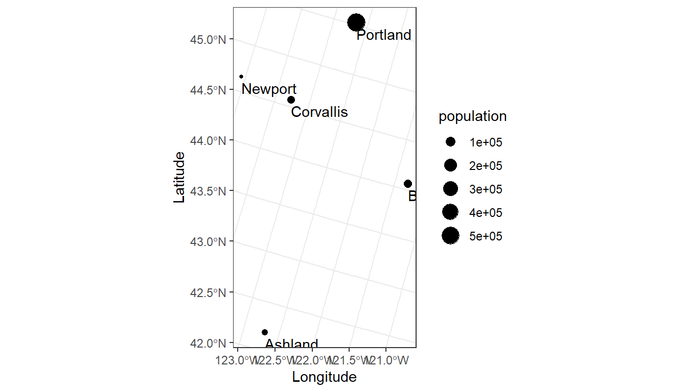
EPSG codes are unique identifiers that represent coordinate reference systems. Some commonly used EPSG codes include:
- 4326: The WGS84 geographic coordinate reference system.
- 4269: The NAD83 geographic coordinate reference system.
- 5070: The NAD83 projected coordinate reference system.
4.2.3 It all feels like R
There can be huge advantages to doing GIS tasks in R, within one software system. If you are familiar with R, the leap to doing GIS in R will feel small.
As noted above, the sf package provides a variety of GIS functions, such as buffers, intersection, centroids, etc. In addition, these functions can be combined with tidyverse functions in piped procedures.
# Plot 1:
# Add 100 Km buffer to cities
cities_buffer <-
oregon_cities %>%
st_buffer(100000)# Plot, color by city, and add centroids
ggplot(data = cities_buffer) +
geom_sf(aes(fill = cities), alpha = 0.5) +
geom_sf(data = st_centroid(oregon_cities)) +
theme_bw()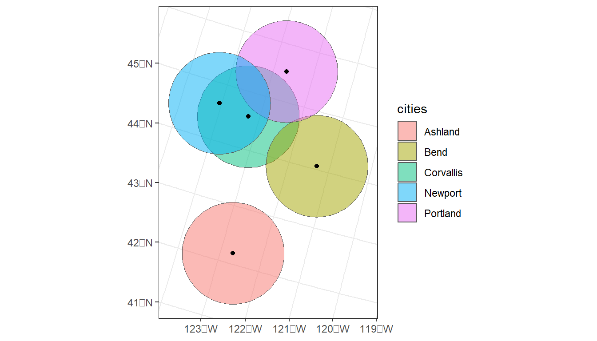
# Plot 2:
oregon_cities %>%
# 100 Km buffer
st_buffer(100000) %>%
# Split polygons where buffers intersect
st_intersection() %>%
# Add area to table, but drop units (causes issues with ggplot)
mutate(area = st_area(.) %>%
units::drop_units(),
id = as.factor(1:nrow(.))) %>%
ggplot() +
geom_sf(aes(fill = id), alpha = 0.5) +
theme_bw()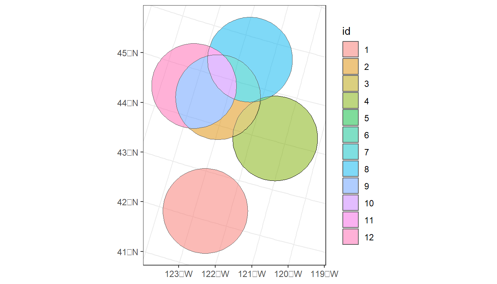
4.3 Raster data
Another fundamental data type in GIS is the raster. Rasters are a way of displaying gridded or an array of data, where each member of the grid represents a landscape feature (e.g., elevation) and each element also has a given resolution (e.g., 30m x 30m).
There are several packages available to work with rasters in R, including the original raster, but also now terra, and stars. We’ll use the terra package since it has an active develoment community on GitHub and has taken over as the primary package for handling and viewing raster data. It is reported to be up to 7x faster than the original raster package for some processes. If you are familiar with raster it will feel very similar.
Much like sf, terra has a large number of functions for working with raster data.
ls("package:terra")
#> [1] "%in%" "activeCat" "activeCat<-"
#> [4] "add_box" "add_legend" "add<-"
#> [7] "addCats" "adjacent" "aggregate"
#> [10] "align" "all.equal" "allNA"
#> [13] "animate" "app" "approximate"
#> [16] "area" "Arith" "as.array"
#> [19] "as.bool" "as.contour" "as.data.frame"
#> [22] "as.factor" "as.int" "as.lines"
#> [25] "as.list" "as.matrix" "as.points"
#> [28] "as.polygons" "as.raster" "atan_2"
#> [31] "atan2" "autocor" "barplot"
#> [34] "blocks" "boundaries" "boxplot"
#> [37] "buffer" "cartogram" "catalyze"
#> [40] "categories" "cats" "cbind2"
#> [43] "cellFromRowCol" "cellFromRowColCombine" "cellFromXY"
#> [46] "cells" "cellSize" "centroids"
#> [49] "clamp" "clamp_ts" "classify"
#> [52] "clearance" "click" "colFromCell"
#> [55] "colFromX" "colorize" "coltab"
#> [58] "coltab<-" "combineGeoms" "compare"
#> [61] "Compare" "compareGeom" "concats"
#> [64] "contour" "convHull" "costDist"
#> [67] "countNA" "cover" "crds"
#> [70] "crop" "crosstab" "crs"
#> [73] "crs<-" "datatype" "deepcopy"
#> [76] "delaunay" "densify" "density"
#> [79] "depth" "depth<-" "describe"
#> [82] "diff" "direction" "disagg"
#> [85] "distance" "dots" "draw"
#> [88] "droplevels" "elongate" "emptyGeoms"
#> [91] "erase" "expanse" "ext"
#> [94] "ext<-" "extend" "extract"
#> [97] "extractAlong" "extractRange" "fileBlocksize"
#> [100] "fillHoles" "fillTime" "flip"
#> [103] "focal" "focal3D" "focalCor"
#> [106] "focalCpp" "focalMat" "focalPairs"
#> [109] "focalReg" "focalValues" "forceCCW"
#> [112] "free_RAM" "freq" "gaps"
#> [115] "gdal" "gdalCache" "geom"
#> [118] "geomtype" "getGDALconfig" "getTileExtents"
#> [121] "global" "graticule" "gridDist"
#> [124] "gridDistance" "halo" "has.colors"
#> [127] "has.RGB" "has.time" "hasMinMax"
#> [130] "hasValues" "head" "hist"
#> [133] "identical" "ifel" "image"
#> [136] "impose" "inext" "init"
#> [139] "inMemory" "inset" "interpIDW"
#> [142] "interpNear" "interpolate" "intersect"
#> [145] "is.bool" "is.empty" "is.factor"
#> [148] "is.int" "is.lines" "is.lonlat"
#> [151] "is.points" "is.polygons" "is.related"
#> [154] "is.rotated" "is.valid" "isFALSE"
#> [157] "isTRUE" "k_means" "lapp"
#> [160] "layerCor" "levels" "linearUnits"
#> [163] "lines" "logic" "Logic"
#> [166] "longnames" "longnames<-" "makeNodes"
#> [169] "makeTiles" "makeValid" "makeVRT"
#> [172] "map.pal" "mask" "match"
#> [175] "math" "Math" "Math2"
#> [178] "mean" "median" "mem_info"
#> [181] "merge" "mergeLines" "mergeTime"
#> [184] "meta" "metags" "metags<-"
#> [187] "minCircle" "minmax" "minRect"
#> [190] "modal" "mosaic" "na.omit"
#> [193] "NAflag" "NAflag<-" "names"
#> [196] "ncell" "ncol" "ncol<-"
#> [199] "nearby" "nearest" "nlyr"
#> [202] "nlyr<-" "noNA" "normalize.longitude"
#> [205] "north" "not.na" "nrow"
#> [208] "nrow<-" "nsrc" "origin"
#> [211] "origin<-" "pairs" "panel"
#> [214] "patches" "perim" "persp"
#> [217] "plet" "plot" "plotRGB"
#> [220] "points" "polys" "prcomp"
#> [223] "predict" "princomp" "project"
#> [226] "quantile" "query" "rangeFill"
#> [229] "rapp" "rast" "rasterize"
#> [232] "rasterizeGeom" "rasterizeWin" "rcl"
#> [235] "readRDS" "readStart" "readStop"
#> [238] "readValues" "rectify" "regress"
#> [241] "relate" "removeDupNodes" "res"
#> [244] "res<-" "resample" "rescale"
#> [247] "rev" "RGB" "RGB<-"
#> [250] "roll" "rotate" "round"
#> [253] "rowColCombine" "rowColFromCell" "rowFromCell"
#> [256] "rowFromY" "same.crs" "sapp"
#> [259] "saveRDS" "sbar" "scale"
#> [262] "scoff" "scoff<-" "sds"
#> [265] "segregate" "sel" "selectHighest"
#> [268] "selectRange" "serialize" "set.cats"
#> [271] "set.crs" "set.ext" "set.names"
#> [274] "set.RGB" "set.values" "setGDALconfig"
#> [277] "setMinMax" "setValues" "shade"
#> [280] "sharedPaths" "shift" "sieve"
#> [283] "simplifyGeom" "size" "snap"
#> [286] "sort" "sources" "spatSample"
#> [289] "spin" "split" "sprc"
#> [292] "stdev" "stretch" "subset"
#> [295] "subst" "summary" "Summary"
#> [298] "svc" "symdif" "t"
#> [301] "tail" "tapp" "terrain"
#> [304] "terraOptions" "text" "tighten"
#> [307] "time" "time<-" "timeInfo"
#> [310] "tmpFiles" "trans" "trim"
#> [313] "union" "unique" "units"
#> [316] "units<-" "unserialize" "unwrap"
#> [319] "update" "values" "values<-"
#> [322] "varnames" "varnames<-" "vect"
#> [325] "vector_layers" "viewshed" "voronoi"
#> [328] "vrt" "vrt_tiles" "weighted.mean"
#> [331] "where.max" "where.min" "which.lyr"
#> [334] "which.max" "which.min" "width"
#> [337] "window" "window<-" "wrap"
#> [340] "wrapCache" "writeCDF" "writeRaster"
#> [343] "writeStart" "writeStop" "writeValues"
#> [346] "writeVector" "xapp" "xFromCell"
#> [349] "xFromCol" "xmax" "xmax<-"
#> [352] "xmin" "xmin<-" "xres"
#> [355] "xyFromCell" "yFromCell" "yFromRow"
#> [358] "ymax" "ymax<-" "ymin"
#> [361] "ymin<-" "yres" "zonal"
#> [364] "zoom"Let’s create an empty RasterLayer object - we have to define the matrix (rows and columns) the spatial bounding box, and then we provide values to the cells using the runif function to derive random values from the uniform distribution.
r <- rast(ncol=10, nrow = 10)
r[] <- runif(n=ncell(r))
r
#> class : SpatRaster
#> dimensions : 10, 10, 1 (nrow, ncol, nlyr)
#> resolution : 36, 18 (x, y)
#> extent : -180, 180, -90, 90 (xmin, xmax, ymin, ymax)
#> coord. ref. : lon/lat WGS 84
#> source(s) : memory
#> name : lyr.1
#> min value : 0.0002930572
#> max value : 0.9995313857plot(r)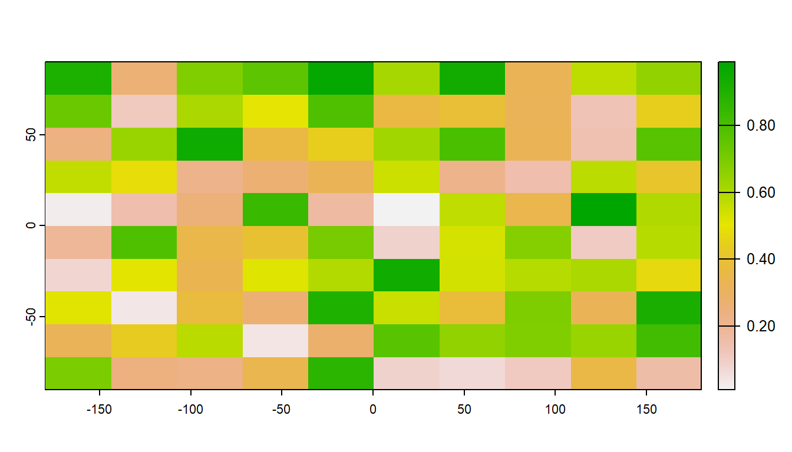
The raster we made from scratch is in memory but very small. An important feature of the terra package is that when you load a raster from file, it is not actually loaded into memory. Instead, terra reads information about the raster into memory, such as its dimensions, its extent, and more. This makes working with rasters lightweight, as it will only ever load into memory what is needed for a specific task. For example, you can access raster values via direct indexing or line/column indexing. The terra package accesses just those locations on the disk. Take a minute to see how this works using the raster r that we just created - the syntax is:
# Access data from the ith location in a raster
r[12]
#> lyr.1
#> 1 0.4698411
# Access data based on row and column
r[2, 2]
#> lyr.1
#> 1 0.46984114.3.1 Stacking raster data
Often, it can be very efficient to work with mutliple rasters at once. Raster data is often distributed in stacks, such as climate data as a NetCDF file.
# Create 2 new rasters based on raster r
r2 <- r * 50
r3 <- sqrt(r * 5)
# Stack rasters and rename to be unique
s <- c(r, r2, r3)
names(s) <- c('r1', 'r2', 'r3')plot(s)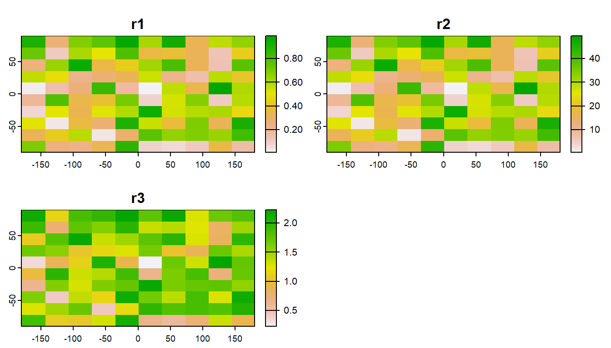
# Manipulate all rasters in stack
s2 <- (s + 5) / 3
# Give modified rasters a new name (add "modified")
names(s2) <- paste0(names(s), " modified")plot(c(s, s2))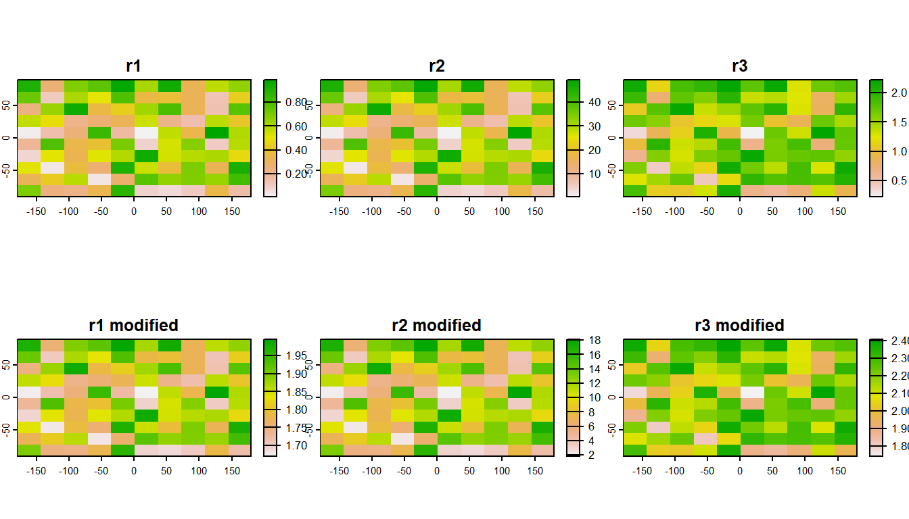
You can also relcassify rasters values with terra::classify()
# Create a matrix where first 2 values are raster values and third value is the class value:
class_table <- c(0, 0.5, 1,
0.5, 1, 2) %>%
matrix(ncol = 3, byrow = TRUE)
# Reclassify r based on the reclass matrix
rcls <- r %>%
terra::classify(class_table)
plot(c(r, rcls))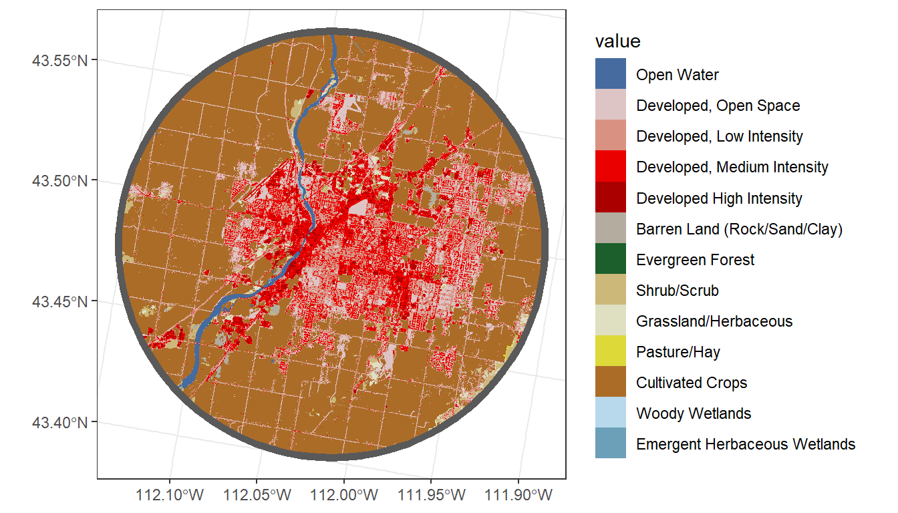
4.4 Working with real data
There are several (often very new) R packages for accessing and working with spatial data. In this code, we will use theFedData R package to download National Elevation Data. Although this example focuses on digital elevation data, the FedData package provides access to several federal datasets, including the National Land Cover Database (NLCD).
# Select just Corvallis and calculate a 10,000-m buffer
corvallis <-
oregon_cities %>%
filter(cities == 'Corvallis') %>%
st_buffer(10000)
# Download national elevation data (ned)
ned <- FedData::get_ned(
template = corvallis,
label = "corvallis")
names(ned) <- "elevation"
# Check whether the elevation and buffer data share the same geographic reference system
st_crs(ned) == st_crs(corvallis)
#> [1] FALSEWe can transform the projection of the raster with terra::project(). Because the raster represents continuous data, we will use the bilinear interpolation method. For categorical data (e.g., land cover), it is best to use method = 'near'
ned <- terra::project(ned,
'epsg:5070',
method = 'bilinear')The tidyterra package gives us a new “geometry” for ggplot called geom_spatraster().
ggplot() +
tidyterra::geom_spatraster(data = ned) +
geom_sf(data = corvallis,
fill = NA,
color = 'white',
lwd = 2) +
theme_bw()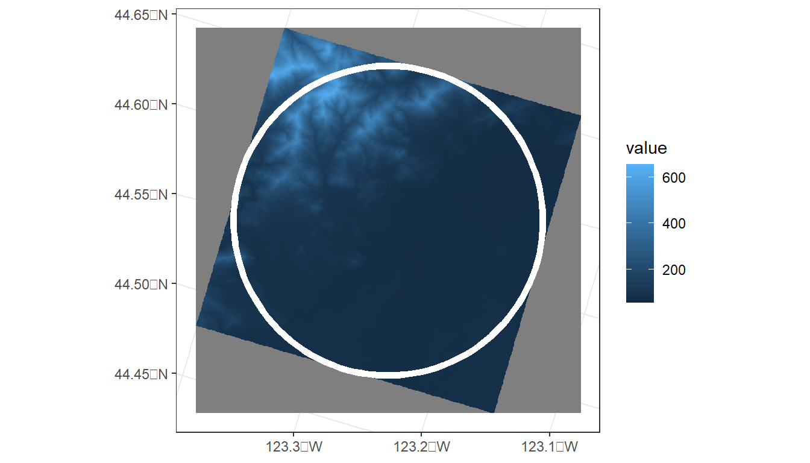
In addition to elevation, we can derive several topographic indices, including slope and roughness.
# Calculate several terrain metrics
?terra::terrainTo calculate these metrics on the elevation raster, we can use the terrain() function from the terra package.
# Calculate several terrain metrics
terrain_metrics <- terrain(ned,
v = c('slope', 'roughness', 'TRI'))plot(c(ned, terrain_metrics))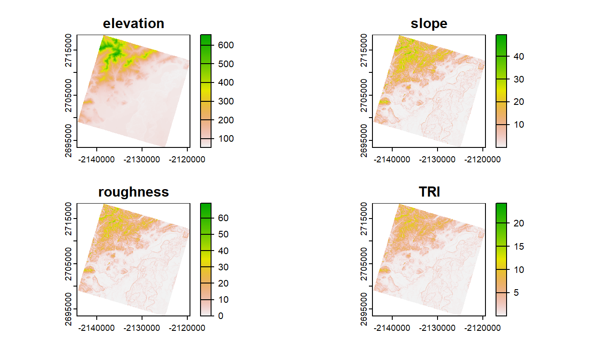
ggplot() +
geom_spatraster(data = terrain_metrics) +
facet_wrap(~lyr, ncol = 2) +
scale_fill_whitebox_c(
palette = "muted",
n.breaks = 12,
guide = guide_legend(reverse = TRUE)
) +
theme_bw()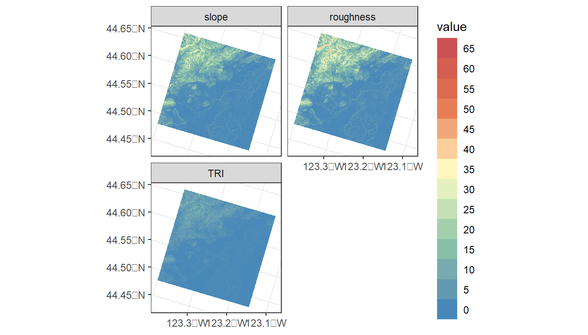
What if we want to know the average of elevation, slope, etc. within the buffered area of Corvallis?
# First, let's combine into a single stack of rasters
terrain_metrics <- c(terrain_metrics, ned)
# zonal function in terra to calculate zonal statistics
terra::zonal(terrain_metrics,
# Need to convert corvallis `sf` object to terra vector
terra::vect(corvallis),
# Metric to be calculated
mean, na.rm = T)
#> slope roughness TRI elevation
#> 1 4.638052 5.604068 1.717456 119.6678In addition to zonal statistics, the terra package can be used to extract (terra::extract()) the total number of pixels of different categories within a polygon, which can be converted to area (see exercise below). terra::extract() is also used to drop points through raster to obtain data at lat/lon locations.
Zonal statistics and tabulation of areas are fundamental to generating data summaries that are useful for ecological/statistical analyses, and the terra package has greatly improved the processing speed of zonal stats in R.
However, most analyses in aquatic ecology are not based on buffered points, like we covered here. In addition, zonal statistics over large geographic areas can still be a big task for R, such as for large watersheds.
In the next sections, we’ll first cover how to generate watershed boundaries to generate watershed summaries. After that, we’ll discuss the StreamCatTools package for accessing a variety of watershed metrics for which the zonal statistics have already been calculated.
4.5 R Code Appendix
library(tidyverse)
library(sf)
library(terra)
library(FedData)
library(tidyterra)
library(maps)
id <- c(1:5)
cities <- c('Ashland','Corvallis','Bend','Portland','Newport')
longitude <- c(-122.699, -123.275, -121.313, -122.670, -124.054)
latitude <- c(42.189, 44.57, 44.061, 45.523, 44.652)
population <- c(20062, 50297, 61362, 537557, 9603)
oregon_cities <- data.frame(id, cities, longitude, latitude, population)
ggplot(
data = oregon_cities,
aes(x = longitude, y = latitude, size = population, label = cities)
) +
geom_point() +
geom_text(hjust = 1, vjust = 1) +
theme_bw()
ls("package:sf")
print(oregon_cities)
oregon_cities <- oregon_cities %>%
st_as_sf(coords = c('longitude', 'latitude'), crs = 4269)
print(oregon_cities)
oregon_cities %>%
select(cities)
st_crs(oregon_cities) == st_crs(5070)
oregon_cities <-
oregon_cities %>%
st_transform(crs = 5070)
print(oregon_cities)
ggplot(data = oregon_cities) +
geom_sf_text(aes(label = cities),
hjust=0, vjust=1.5) +
geom_sf(aes(size = population)) +
xlab('Longitude') +
ylab('Latitude') +
theme_bw()
# Plot 1:
# Add 100 Km buffer to cities
cities_buffer <-
oregon_cities %>%
st_buffer(100000)
# Plot, color by city, and add centroids
ggplot(data = cities_buffer) +
geom_sf(aes(fill = cities), alpha = 0.5) +
geom_sf(data = st_centroid(oregon_cities)) +
theme_bw()
# Plot 2:
oregon_cities %>%
# 100 Km buffer
st_buffer(100000) %>%
# Split polygons where buffers intersect
st_intersection() %>%
# Add area to table, but drop units (causes issues with ggplot)
mutate(area = st_area(.) %>%
units::drop_units(),
id = as.factor(1:nrow(.))) %>%
ggplot() +
geom_sf(aes(fill = id), alpha = 0.5) +
theme_bw()
ls("package:terra")
r <- rast(ncol=10, nrow = 10)
r[] <- runif(n=ncell(r))
r
plot(r)
# Access data from the ith location in a raster
r[12]
# Access data based on row and column
r[2, 2]
# Create 2 new rasters based on raster r
r2 <- r * 50
r3 <- sqrt(r * 5)
# Stack rasters and rename to be unique
s <- c(r, r2, r3)
names(s) <- c('r1', 'r2', 'r3')
plot(s)
# Manipulate all rasters in stack
s2 <- (s + 5) / 3
# Give modified rasters a new name (add "modified")
names(s2) <- paste0(names(s), " modified")
plot(c(s, s2))
# Create a matrix where first 2 values are raster values and third value is the class value:
class_table <- c(0, 0.5, 1,
0.5, 1, 2) %>%
matrix(ncol = 3, byrow = TRUE)
# Reclassify r based on the reclass matrix
rcls <- r %>%
terra::classify(class_table)
plot(c(r, rcls))
# Select just Corvallis and calculate a 10,000-m buffer
corvallis <-
oregon_cities %>%
filter(cities == 'Corvallis') %>%
st_buffer(10000)
# Download national elevation data (ned)
ned <- FedData::get_ned(
template = corvallis,
label = "corvallis")
names(ned) <- "elevation"
# Check whether the elevation and buffer data share the same geographic reference system
st_crs(ned) == st_crs(corvallis)
ned <- terra::project(ned,
'epsg:5070',
method = 'bilinear')
ggplot() +
tidyterra::geom_spatraster(data = ned) +
geom_sf(data = corvallis,
fill = NA,
color = 'white',
lwd = 2) +
theme_bw()
# Calculate several terrain metrics
?terra::terrain
# Calculate several terrain metrics
terrain_metrics <- terrain(ned,
v = c('slope', 'roughness', 'TRI'))
plot(c(ned, terrain_metrics))
ggplot() +
geom_spatraster(data = terrain_metrics) +
facet_wrap(~lyr, ncol = 2) +
scale_fill_whitebox_c(
palette = "muted",
n.breaks = 12,
guide = guide_legend(reverse = TRUE)
) +
theme_bw()
# First, let's combine into a single stack of rasters
terrain_metrics <- c(terrain_metrics, ned)
# zonal function in terra to calculate zonal statistics
terra::zonal(terrain_metrics,
# Need to convert corvallis `sf` object to terra vector
terra::vect(corvallis),
# Metric to be calculated
mean, na.rm = T)
data('us.cities')
my_city <- us.cities %>%
filter(name == 'Idaho Falls ID') %>%
st_as_sf(coords = c('long', 'lat'), crs = 4269) %>%
st_transform(crs = 5070) %>%
st_buffer(10000)
nlcd <- get_nlcd(
template = my_city,
year = 2021,
label = 'city') %>%
terra::project('epsg:5070',
method = 'near')
city_nlcd <- terra::extract(nlcd,
terra::vect(my_city))
city_nlcd %>%
group_by(Class) %>%
summarise(count = n()) %>%
mutate(percent = (count / sum(count)) * 100)
# Bonus: mapping land cover w/ city radius
# Mask then crop the NLCD to the buffer
nlcd_crop <- terra::mask(nlcd, my_city) %>%
terra::crop(my_city)
ggplot() +
geom_spatraster(data = nlcd_crop) +
geom_sf(data = my_city,
fill = NA,
lwd = 2) +
theme_bw()Spatial Analysis and Statistical Modeling with R and spmodel - 4 GIS in R Spatial Analysis and Statistical Modeling with R and spmodel - 4 GIS in R Spatial Analysis and Statistical Modeling with R and spmodel - 4 GIS in R Spatial Analysis and Statistical Modeling with R and spmodel